泡了两晚，游了一场泳，
然后开回家
三天两晚，两晚住同一间房。没赶景点，把时间花在泡汤、睡觉、游泳和吃上——这趟的账，回来算清楚了。
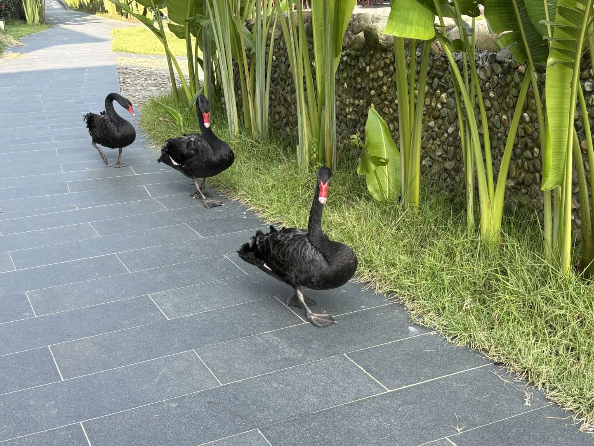
The numbers
先把数字摆出来
下面这些不是估的，是订单、截图和车机记录里的原始数字。
- 行程
- 3 天 2 晚9/25 五 — 9/27 日
- 住宿实付
- ¥2,9762 晚 × ¥1,488，含双早
- 返程里程
- 223.2 km清远 → 广州 → 东莞 → 深圳
- 返程耗时
- 3 小时 22 分均速 66 km/h
- 返程过路费
- ¥144.5中秋高速照收
- 门口农家菜
- 4.9 分347 条评价 · 人均 ¥47
Day by day
三天，都干了什么
按天点开看。时间点都是真实发生的，不是计划表。
9 月 25 日（周五）· 在路上
深圳 → 清远市清新区三坑镇，约 247 公里
- 深圳出发
往清远方向，全程高速，路况正常。
- 竹院牛庄 · 桑拿鸡 + 桑拿牛肉
路上吃的第一顿，桑拿鸡和桑拿牛肉各一份。清远鸡的名声，从这一顿开始兑现。
- 入住「清远水上云朵温泉酒店」
房型是云隐景观房 · 一居双床房，独栋小别墅里的房间，园区占地约 426 亩。含双人早餐。
- 泡第一池私汤
房间自带泡池，每间房每晚含 2 池温泉水，超出部分另收——不是不限次，这点订房时务必看清楚。
- 附近农庄 · 牛腩牛肠煲
晚饭在园区外的农庄解决，一锅牛腩牛肠煲，热乎、下饭。
- 第二池
两池的额度当晚用掉第二池，泡完直接睡。
9 月 26 日（周六）· 进城吃饭，然后去看峰林
三坑镇 → 清远万达广场 → 英西峰林方向
- 早餐 · 云朵餐厅自助
在酒店前台右侧的云朵餐厅，自助形式，凭房卡进，含在房费里。
- 清远万达广场
清城区湖西路 89 号，离飞来湖不远。主要目的就一个：吃。
- 「花花姨碌鹅」· ¥174
点了碌鹅拼盘 + 酿番茄 + 鱼丸鱼头煲。碌鹅是招牌，好吃——这是整趟吃得最值的一顿之一。
- 往英西峰林方向开
从万达往西北，目标是峰林日落。
- 到了九龙镇，景区已经关门
导航把我们带到了九龙镇的洞天仙境——那是个溶洞景区（4A，8:30–17:00），跟我们要看的峰林不是一回事，而且到的时候已经过了闭园时间。
这一段，下次这么走
- 「英西峰林」横跨九龙、黄花、岩背三个镇，是 20 多公里的区域统称。只搜这四个字，导航会把你丢到该区域最有名的那个点——也就是九龙镇的洞天仙境。
- 要看「十里画廊」那种峰林，目的地应该是 黄花镇新民村 · 峰林胜境（8:00–17:30，最后入场 17:00，¥68，停车免费）。两地直线只差 7.6 km，但山路要开 24 分钟。
- 这类景区的关门时间和最后入场时间，要在出发前查清楚，不能只算车程——尤其「看日落」这种安排，光线最好的时段往往正好在关门之后。
9 月 27 日（周日）· 游泳、退房、返程
三坑镇 → 清远 → 广州 → 东莞 → 深圳
- 园区泳池游泳
泳池是分道运营的（水里有黄、紫的分道浮力条），池边有金属高脚救生台、救生圈和监控立杆——是正经运营的泳池，不是儿童戏水池。确认单上那句「水深 30–130cm」把它写小了。
- 玩桨板
板上有绿色防滑垫，双头桨可以绑带固定在板上。池边还有蓝顶棚的儿童水上攀爬架。
- 顺手把园区逛了一圈
黑天鹅带着崽、白鸭和锦鲤、灰雁群、草坡上一棵孤树、粉红台阶、生态菜园——比订单上写的「免费项目」丰富得多。
- 退房
退房时间就是 12:00。
- 「家的味（三坑温泉店）」
就在酒店同村，步行一两分钟。点了白切鸡 + 清蒸全鱼。美团 4.9 分、347 条评价、人均 ¥47。注意：团购券标着「最早明天可用」，当天到店用不了。
- 出发返深
车机记录：223.2 km，3 小时 22 分，均速 66 km/h，过路费 ¥144.5，路线是清远 → 广州 → 东莞 → 深圳，约 17:29 到家。
The grounds
园区里有什么
426 亩的园区，两晚没住够。下面这些是最后一天早上边走边拍的。
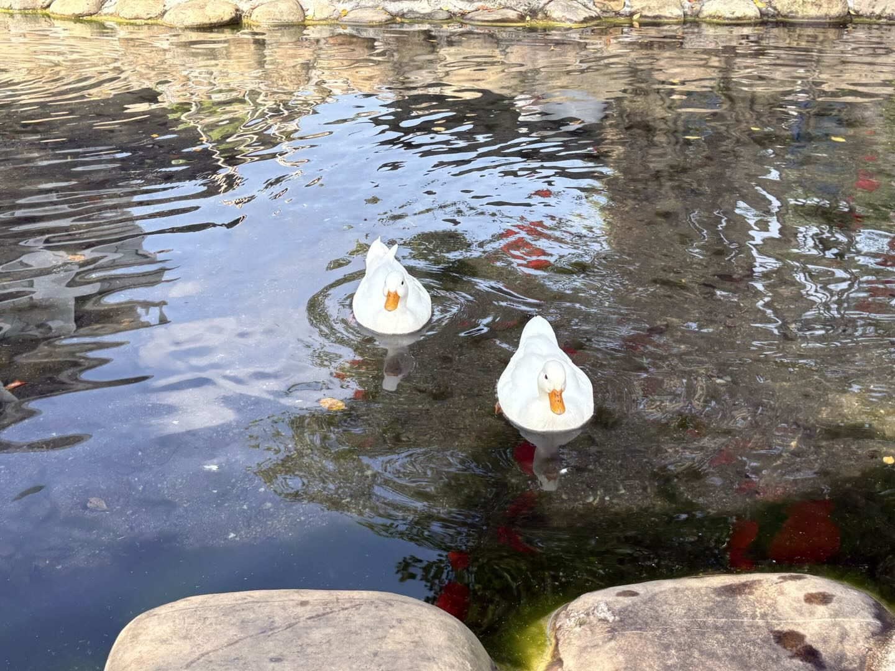
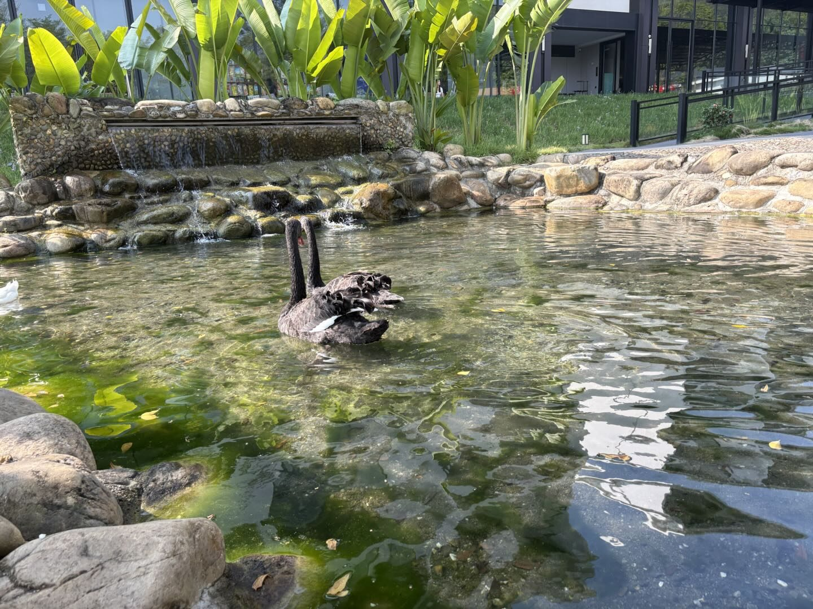
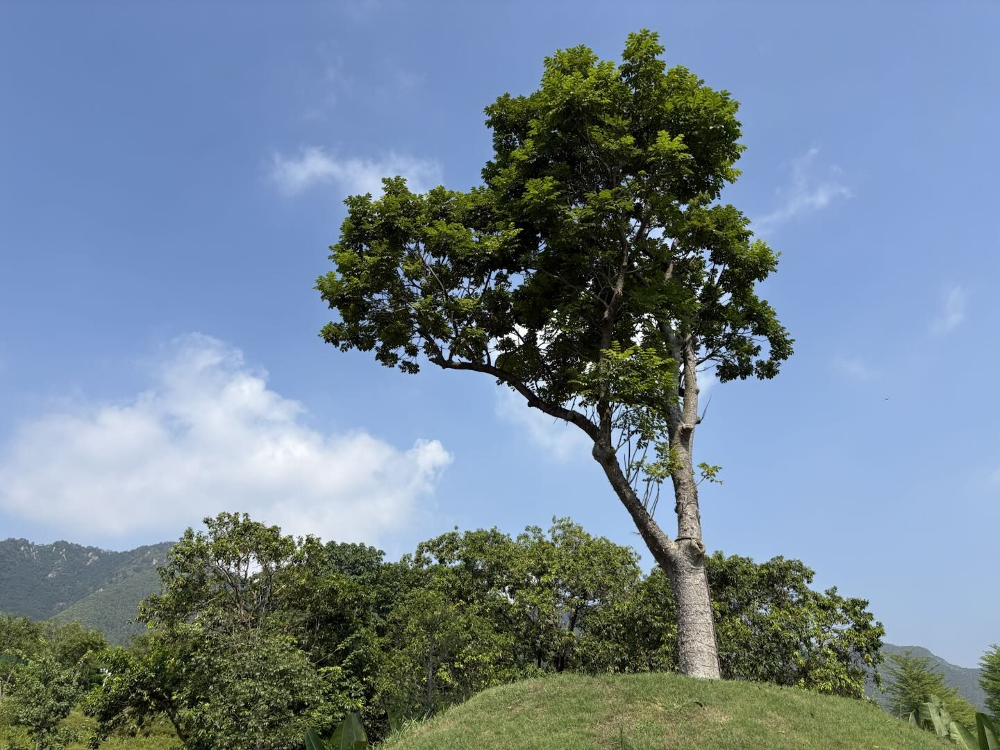
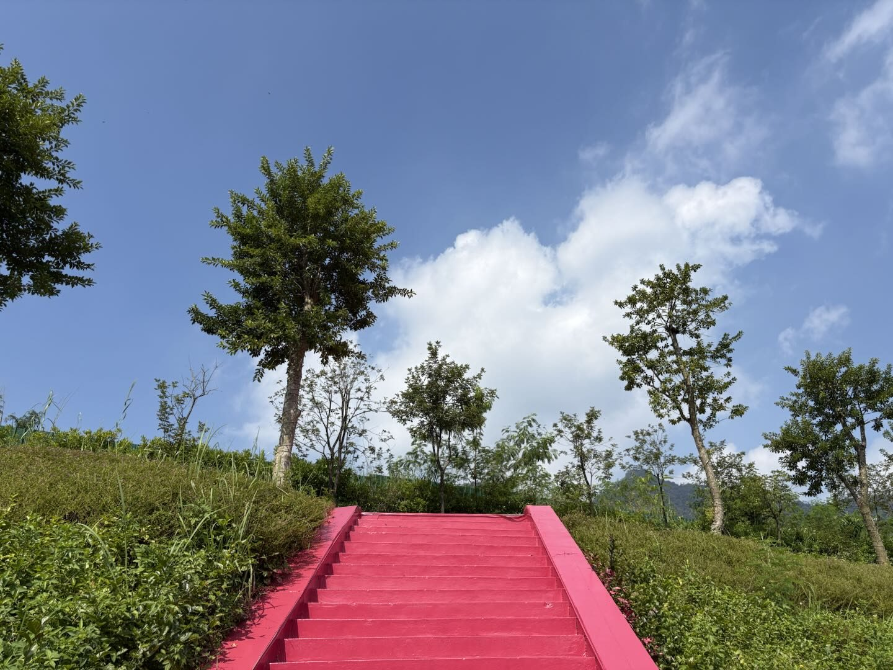
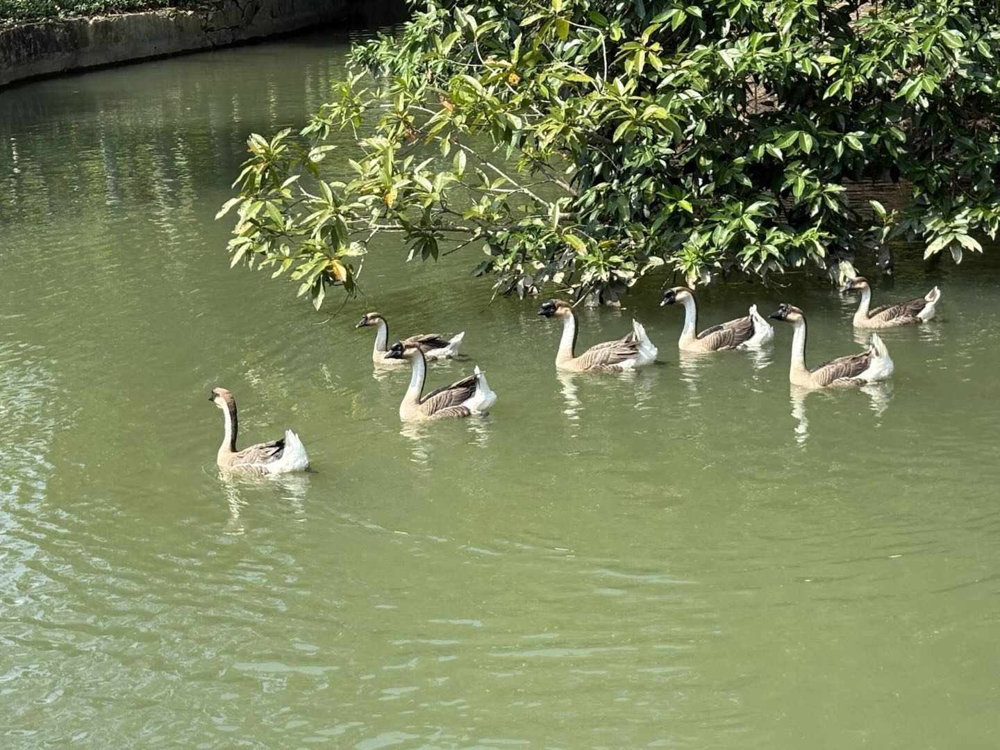
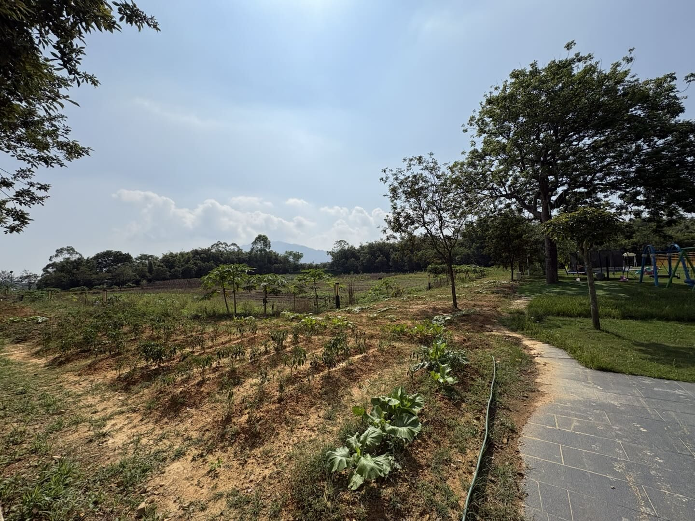
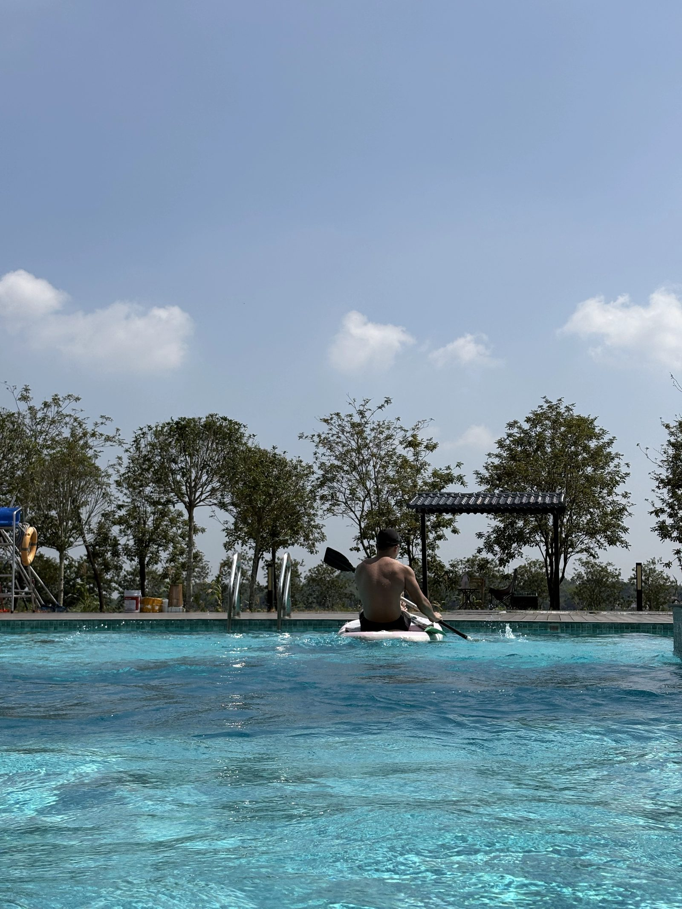
园区设施清单（亲眼确认过的）
- 泳池：分道运营，金属高脚救生台 + 救生圈 + 监控立杆，另有泳池下水扶梯、儿童水上攀爬架、桨板
- 水禽：黑天鹅（带崽）、白鸭 + 锦鲤、灰雁群
- 景观：草坡孤树、粉红台阶、灰瓦中式凉亭、白色遮阳伞与户外沙发区、一排小叶榄仁（树干上缠着串灯）
- 其他：生态菜园、儿童游乐区、可停车
- 客房：独栋小别墅，每间房自带私汤泡池（每房每晚含 2 池温泉水）
What we ate
三天吃了这些
清远鸡、乌鬃鹅、北江鱼——这一带的招牌基本都占上了。
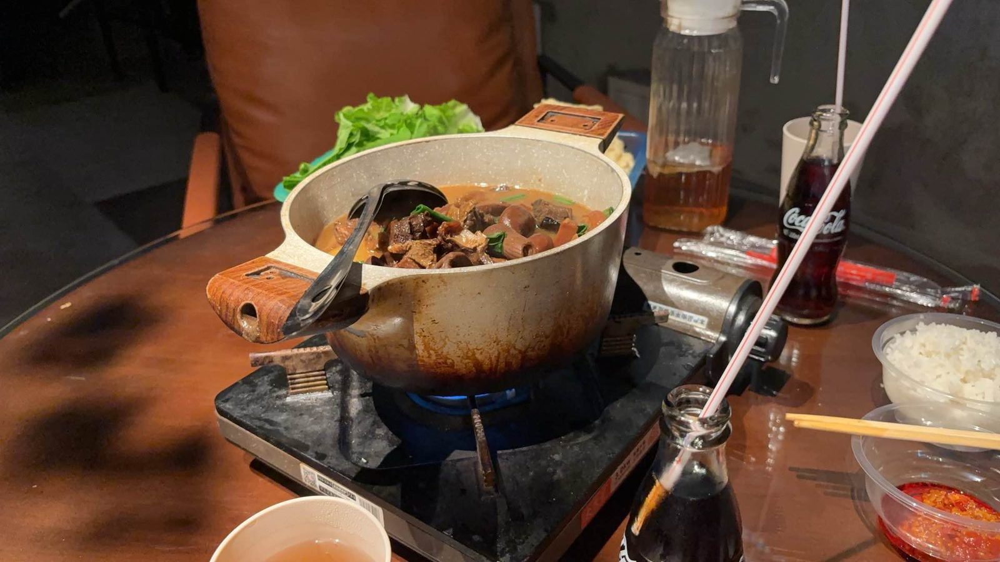
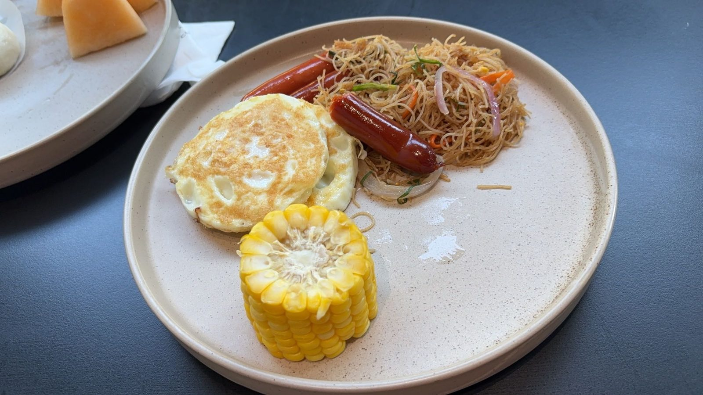
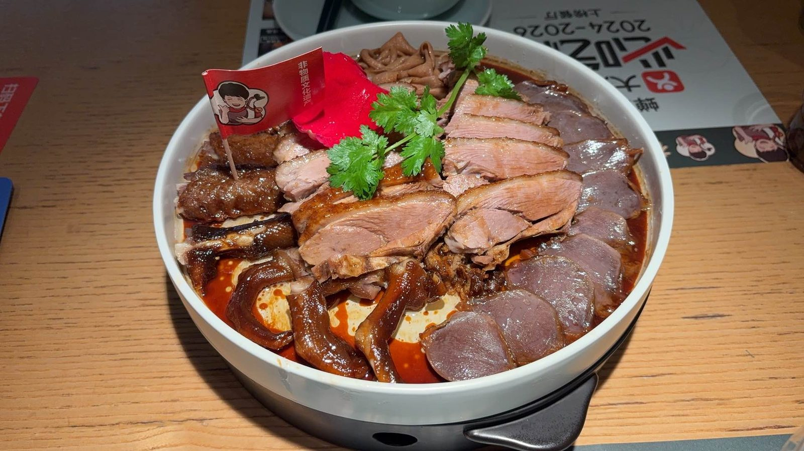
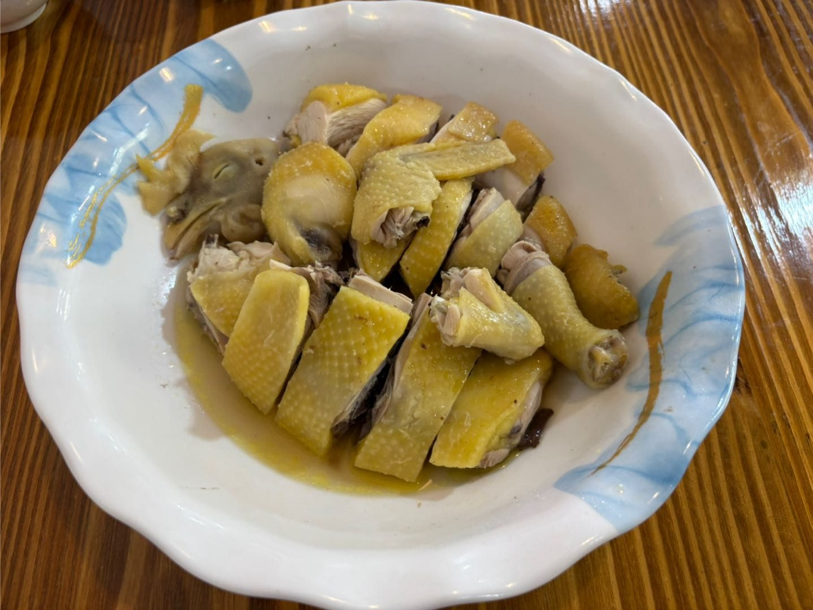
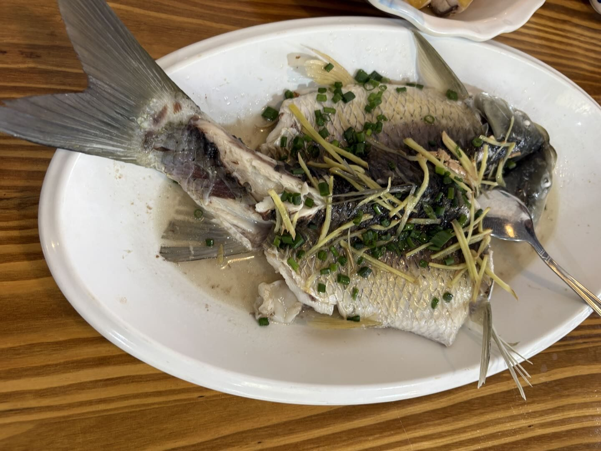
The bill
花掉的，和还没数的
只列有凭据的，没数的不硬凑。
- 住宿
- ¥2,9762 晚 × ¥1,488，含双人早餐
- 花花姨碌鹅
- ¥174碌鹅拼盘 + 酿番茄 + 鱼丸鱼头煲
- 返程过路费
- ¥144.5中秋高速照收，国庆才免费
- 未入账
- —家的味那顿、去程过路费、油钱
Next time
这趟换来的六条经验
不是攻略抄来的，是这三天真金白银换的。
- 目的地要给「具体景点名 + 所在镇」，绝不能只给区域统称。搜区域名，导航会把你送到那个区域最出名的那一个点，而它可能完全不是你要的。
- 看景点先看关门时间和最后入场时间，再倒推出发时间。只算车程是不够的。
- 节假日返程，时间上要加缓冲。这趟实测 223.2 km 开了 3 小时 22 分，比按自由流速度算出来的要慢；返程按
+20~30 分钟留余量。 - 中秋高速不免费，国庆才免费。返程 ¥144.5 的过路费就是证据。
- 团购券要看生效日。「家的味」的券标着「最早明天可用」，当天到店用不了，得按原价结。
- 别被订单上的简写误导。确认单把园区泳池写成「水深 30–130cm」，实际是分道运营、有救生台的正经泳池。